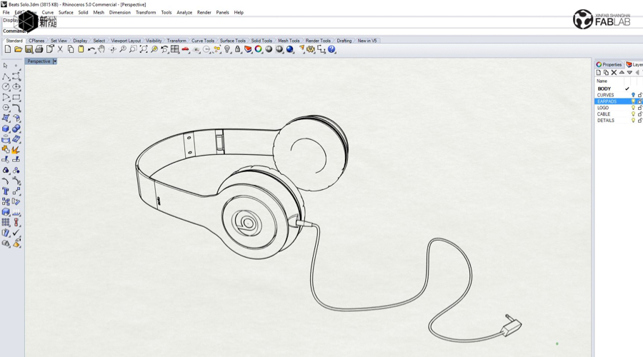
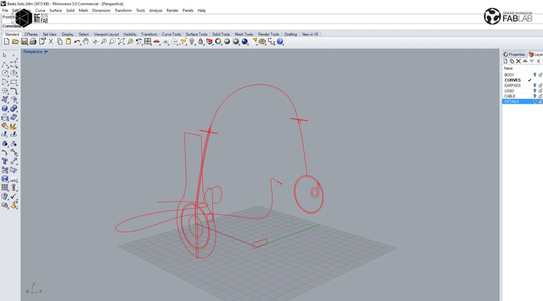
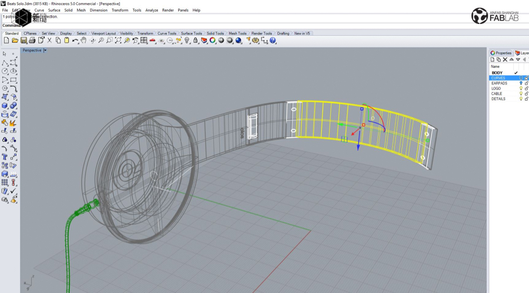
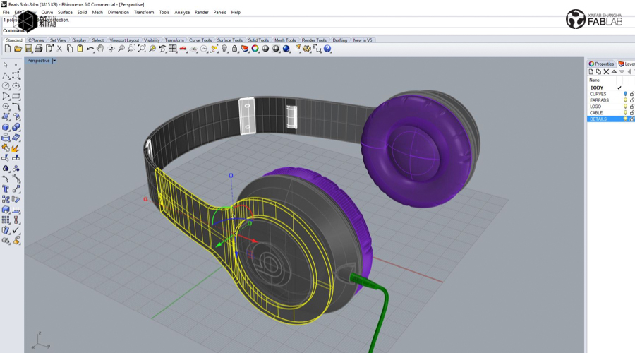
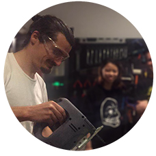

WORKSHOP
3D MODELING INTENSIVE WORKSHOP: RHINO 3D - BEATS BY DRE - FROM 20 NOVEMBER-2 DECEMBER 2017 (6 SESSIONS OVER 2 WEEKS)

***Workshop in English only***
When: November 20 to December 2 (2 weeks), 3 sessions/week (Mon & Wed from 6pm to 9pm / Sat from 1pm to 4pm)
Where: Xinfab - Kangding East Rd, Lane 45, Building no.5, Room 102, Jing'an District
Price: Special inauguration price 2000 RMB (Wechat 2010 RMB)
In this intensive workshop you will learn to create and edit accurate free form 3d NURBS models. This fast-moving class covers most of Rhinoceros 3D's functionalities, including the most advanced surfacing commands. You will systematically move through the user interface, command access, creation and editing of curves, surfaces and solids. This Rhino Level 1 workshop is ideal for beginners.
You will learn Rhino by modeling the Beat headphones, one of the most iconic headphones on the market. In a step by step modeling method, each student will be guided through the experience of completing a challenging and interesting design project, and managing to use commands in synergy through various techniques.
Everything you will learn will allow you to create your own models afterwards. You will go home with the following skills:
_Move comfortably around the Rhino modeling environment
_Create and edit curves, surfaces, and solids
_Organize information in layers and understand workflow
_Use modelling aids for future learning
_Produce simple renderings of the Rhino models
Your dedication is key. We invite you to practice after the lessons with some homework and maximize your takeaway from the course.
Requirements:
_No previous Rhino knowledge is needed, but you do need to be familiar with how to use a computer (in other words, Windows or iOS don't scare you and you understand basic commands like Ctrl C+Ctrl V);
_Previous drafting and 3D modeling experience is helpful, but not required;
_If you have tried to learn 3D modeling by yourself with tutorials, it will also help (but not required).
Things you should bring:
// Your laptop and charger
// Mouse (this workshop can’t be followed without a mouse)
// Install Rhinoceros 3d in your laptop (Windows HIGHLY recommended) (https://www.rhino3d.com/)
// Your passion, curiosity, and questions




WORKSHOP SCHEDULE
// DAY 1 (MONDAY, NOVEMBER 20, 6PM - 9 PM)
_Introduction to Digital Technologies
_Introduction to Rhinoceros
_Rhino interface
_Planning and zooming
_Layers / Object properties / Basic design commands
_Model organization
// DAY 2 (WEDNESDAY, NOVEMBER 22, 6PM - 9PM)
_You'll start creating your artwork from scratch
_Rhino geometry types 1 (point, lines and curves)
_2D drafting
_2D patterns
_2D transformations
_Introduction to 3D geometry
_Rhino geometry types 2 (surfaces and solids)
// DAY 3 (SATURDAY, NOVEMBER 25, 1PM - 4PM)
_3D drafting
_3D transformations
_Editing solids
_Extrusions
_Boolean operations
_Panelling
_Splitting and joining
// DAY 4 (MONDAY, 27 NOVEMBER, 6PM - 9PM)
_Creating geometry (designing the Beats headphones through volumes and shapes)
_Surfacing and model editing
_Control point editing
_Nurb geometry manipulation
// DAY 5 (WEDNESDAY, 29 NOVEMBER, 6PM - 9 PM)
_Detailing geometry (Beats headphones)
_Analysis and degrees
_Dimensions
_Modeling practice and questions
// DAY 6 (SATURDAY, DECEMBER 2, 1PM - 4PM)
_Finishing your Beats headphones model
_Preparing a scene (completing ready-for-render model), Import/export, setting up named views, priting wireframes, viewport customization)
_Voilà!
///////////////////////////////////
HOW TO SIGN UP
SIGN UP DEADLINE: SATURDAY, NOVEMBER 18
// ALIPAY (2000 RMB)
transfer the workshop fee to pay@xinfab.com (please indicate your phone number on the payment details so we can contact you!)
// WECHAT (2010 RMB - Wechat charges us a fee)
Enter our shop with your phone via this link and proceed to payment with Wechat Wallet
// CASH (2000 RMB)
Come by our lab during our opening hours to book your spot.
Questions? Send an email to info@xinfab.com.
///////////////////////////////////
ABOUT THE TEACHER

Andy is a Franco-Spanish industrial designer and engineer with over four years of international experience working in Europe and Asia. 3D modeling is not only his profession, but also his passion. Besides all things 3D-related, Andy is a hardcore maker and loves to spend his time making all kinds of objects with different digital fabrication methods.